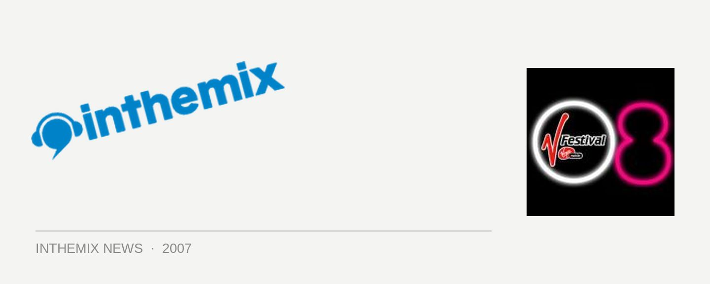

V Festival lineup leaked?
Following on from our NEWS yesterday that the V Festival would be traveling across the country this year, there’s been a bit of an explosion on Australian music forums this morning… Could this really be the lineup we’ll be seeing next year?
Last year’s V Festival events in Sydney and Gold Coast were lapped up by the thousands of punters in attendance – with The Pixies visiting for the very first time as headliners, we also enjoyed performances from the likes of Beck, Jarvis Cocker, Grarls Barkley, Groove Armada, Pet Shop Boys, Soulwax and heaps more. That was always going to be a pretty hard lineup to match, but if these details are correct then V Festival ‘08 will be coming mighty damn close…
So are these acts legit, or merely a clever hoax that’s got everyone fooled? Time will tell, be back at the site tomorrow morning from 6am for the official announcement!
The Smashing Pumpkins,
Air
Duran Duran
Queens of the Stone Age
The Jesus and Mary Chain
Mika
The Presets
CSS
Plug-In City
The Tough Alliance